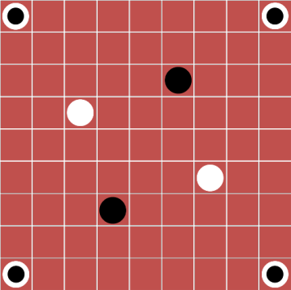

New Game: Shello – An Attempt to Solve the Problems of Reversi/Othello
I present to you a new and not-completely-terrible game:
http://nickbentleygames.wordpress.com/2012/06/23/new-game-shello/
Enjoy

I promised in an earlier post that I would post other games built around a new mechanic I invented, which I shall call the Shifty mechanic, and here I am.
Today’s game is an attempt to capture the spirit of Reversi (AKA Othello) in a form better than Reversi itself.
Some people like Reversi but I think it’s meh. It’s hard to have interesting strategy ideas about it, I think because it has waaaaaaay too much negative feedback. By negative feedback, I mean that the closer you get to winning, the harder it gets to win. The goal is to have more of your pieces on the board than your opponent does when the board’s full, but during much of the game the player with more pieces is at a disadvantage, because her opponent can flip them in big bunches. As a result it’s hard to understand what the state of the board means, which makes it hard to strategize. Too hard.
Some negative feedback is a good thing, but too much or too little is bad. It’s tricky to get it just right, and Reversi goes too far. The best games seem usually to have just a little. Go comes to mind (don’t get too greedy trying to capture or you’ll find yourself out of position).
Another issue: the branch factor (the number of options per turn) is small, and the available choices feel too limited to me.
Digression: want to play a great Go variant? Try Redstone (PDF). I usually see no reason for Go variants to exist but Redstone is an exception. You’ll have to try it to find out why because this isn’t a Redstone essay. End digression.
Anyway I’m trying to invent a game with the same satisfying flipping mechanic as Reversi, but with a better level of negative feedback and a larger branch factor. I’ve been thinking occasionally about this problem for a couple of years and this is the first promising idea I’ve had about how to solve it.
Shello is a game for 2 players, played with chips that are white on one side and black on the other, on a 9×9 square grid (or larger, as long as there are an odd number of cells in the grid. But 9×9 is all you’ll need for a long time.)
The game starts with an opening board layout shown in the picture above.
The pieces in the corners are called Neutral Pieces. These count as both black and white. They never move and they’re never flipped, but they can be used to flip pieces of either color during the game.
Rules
1. One player plays pieces black side up, and the other plays them white side up. Starting with Black, the players take turns. On your turn you must either place a piece on an empty space orthogonally-adjacent to any friendly piece, or or you must move any friendly piece, by a chess queen’s move, to any empty space orthogonally adjacent to fewer pieces (regardless of color) than the space it started on.
2. If you have no legal moves, you must pass.
3. After placing or moving a piece, flip all enemy pieces lying in an uninterrupted straight orthogonal or diagonal row between the piece you placed or moved and any friendly pieces.
4. The game ends when the board is full. The player with more pieces on the board wins.
Notes
1. Rather than start with the fixed opening setup above, players can take turns placing a piece non-adjacent to friendly pieces until there’s two of each color on the board and then proceed according to the rules above. I haven’t experimented with this method much, but there’s a chance it’ll be better than the fixed setup. Might require a pie rule.
2. Why the neutral pieces in the corners? In Reversi, it’s an advantage to have your pieces in corners because they can never be flipped there. On the other hand, it’s hard to get your pieces to the corners because all the pieces grow out slowly in one big clump from the center the board. In Shello, players have more control over where their pieces go, and consequently the opening of each game might devolve into a race to the corners. With neutral pieces in the corners, the corners are dangerous. Problem solved.
3. I’ll wager that most who play this will find it more stimulating than Reversi/Othello. There’s less negative feedback. The reason is that in Shello, the more pieces you have on the board, the more pieces you can move, which gives you better access to strategically important spots. Also, because you can move your pieces, you can move them out of threatened spots, and break up your threatened rows. This transforms the game. Pushes the awesomometer to the right. I believe.